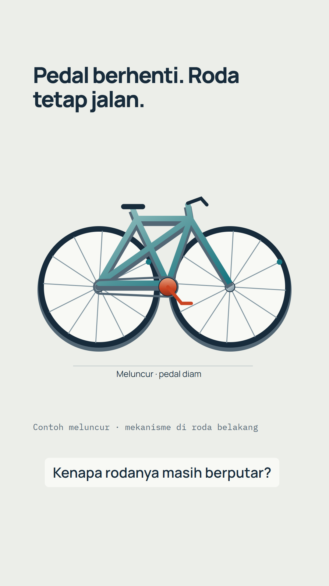
01: Pedal berhenti. Roda tetap jalan.
0.00–3.30s · measured
Pedalnya berhenti. Kenapa rodanya masih berputar?

Pedalnya berhenti. Kenapa rodanya masih berputar?
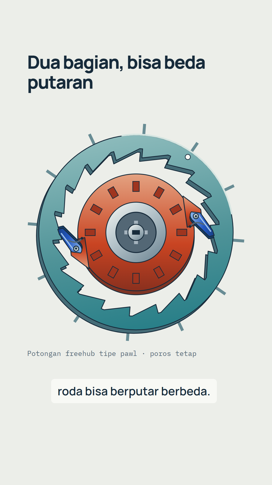
Di roda belakang, penggerak dari rantai dan rumah roda bisa berputar berbeda.
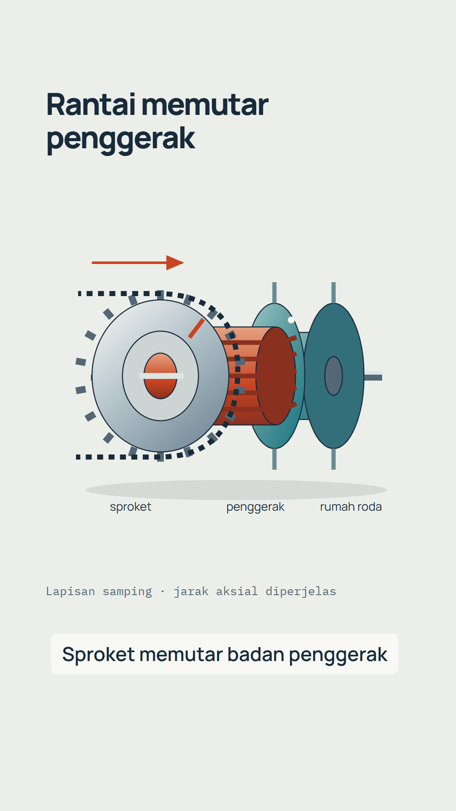
Saat mengayuh, rantai menarik sproket. Sproket memutar badan penggerak di dalam freehub.
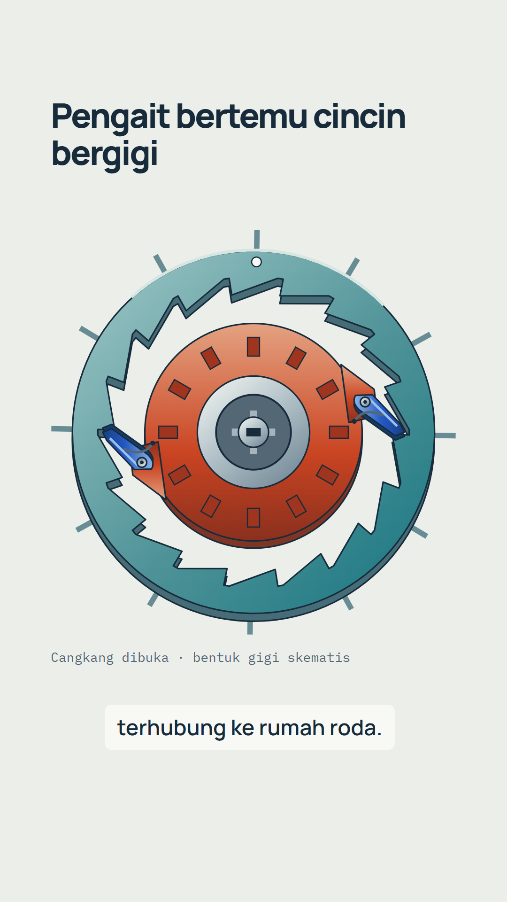
Di sinilah pengait kecil bertemu cincin bergigi yang terhubung ke rumah roda.
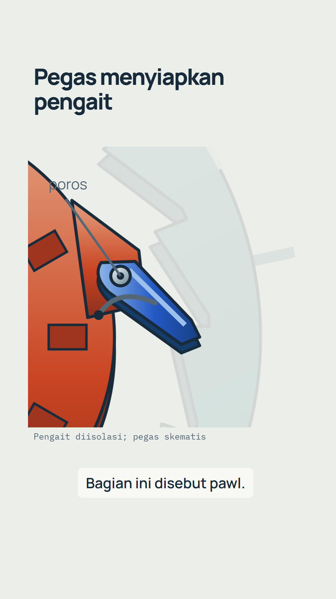
Pegas mendorong ujung pengait ke arah gigi. Bagian ini disebut pawl.
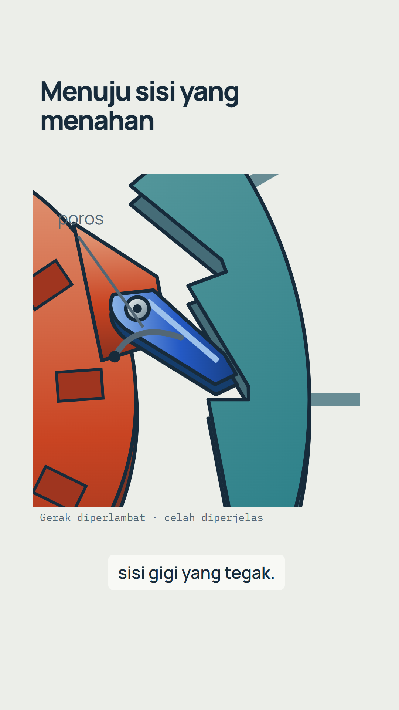
Ketika penggerak berputar untuk mengayuh, ujung pengait mendekati sisi gigi yang tegak.
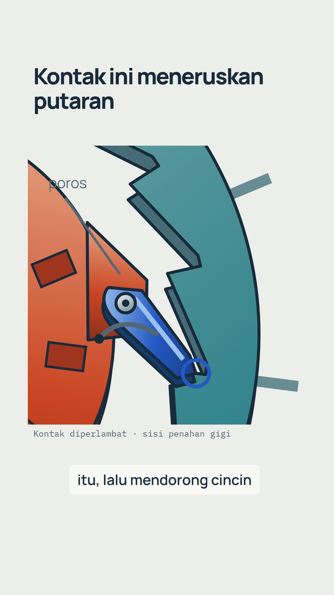
Lihat titik sentuhnya. Pengait tertahan di sisi itu, lalu mendorong cincin ikut berputar.
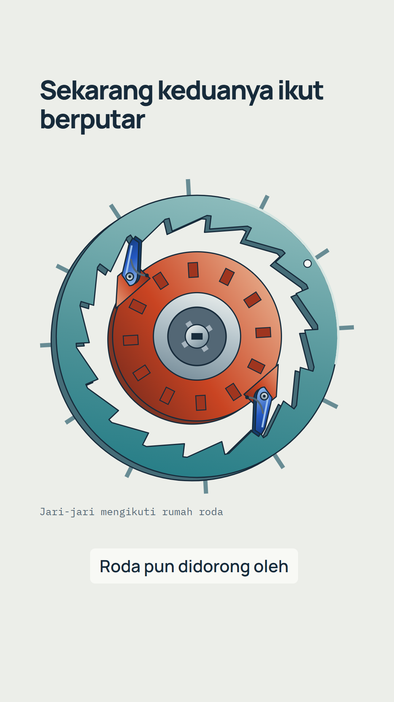
Putaran diteruskan ke rumah roda dan jari-jari. Roda pun didorong oleh kayuhan.
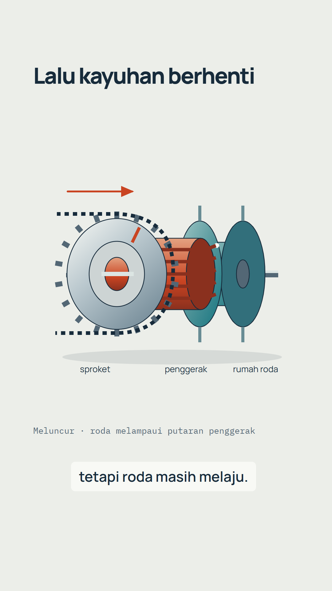
Sekarang kayuhan berhenti. Penggerak dari rantai melambat, tetapi roda masih melaju.
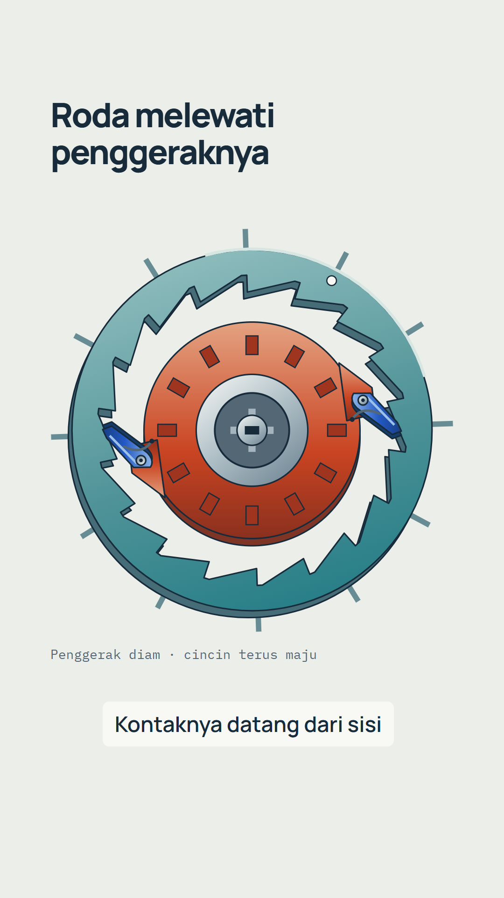
Cincin pada rumah roda kini bergerak melewati pengait. Kontaknya datang dari sisi sebaliknya.
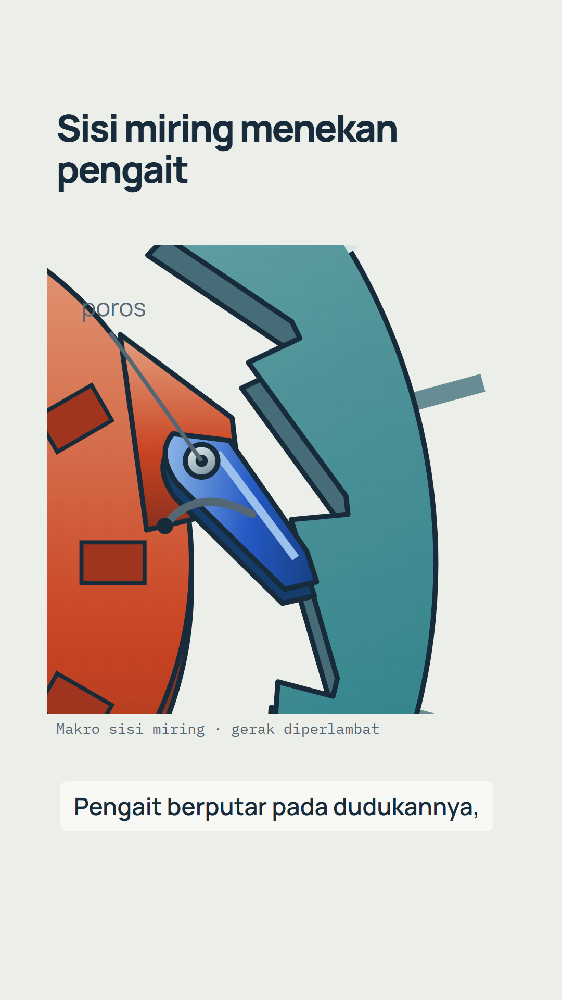
Sisi miring gigi menekan pengait masuk. Pengait berputar pada dudukannya, melawan dorongan pegas.
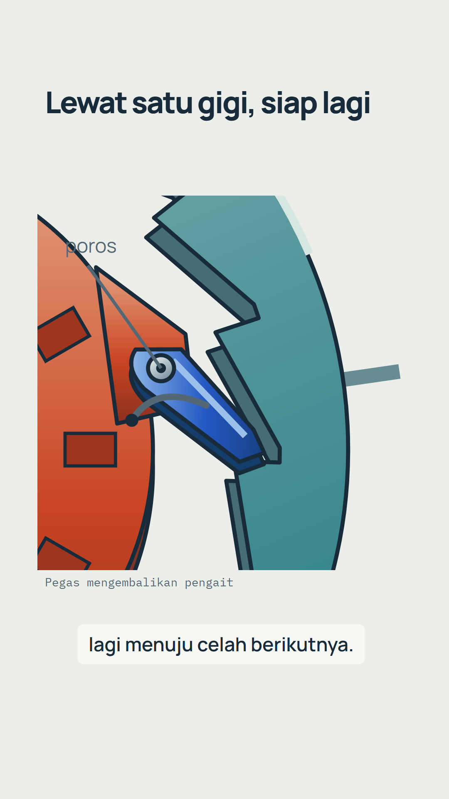
Setelah puncak gigi lewat, pegas mengangkat ujung pengait lagi menuju celah berikutnya.
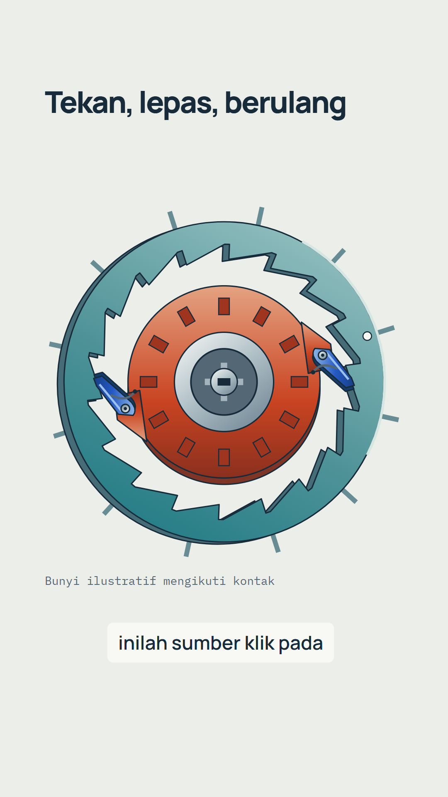
Tekan, lepas, lalu berulang. Kontak pengait dan gigi inilah sumber klik pada freehub tipe ini.
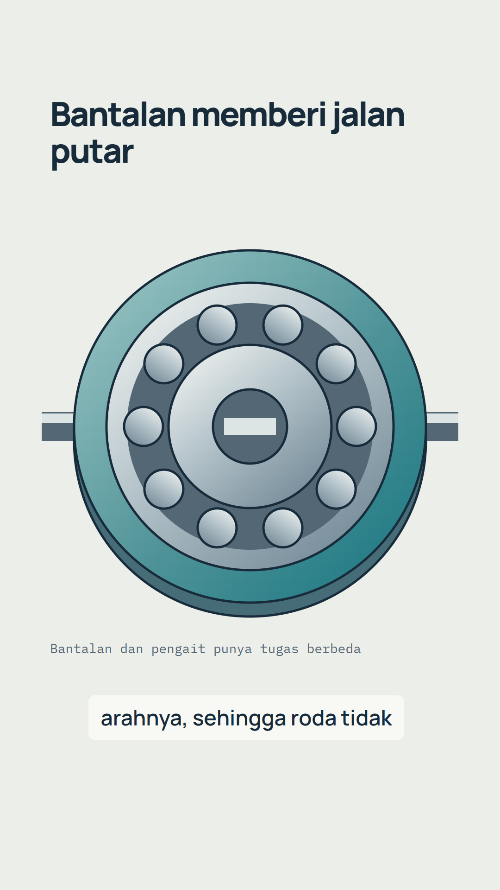
Bantalan menopang bagian yang berputar. Pengait mengatur sambungan satu arahnya, sehingga roda tidak harus menyeret pedal.
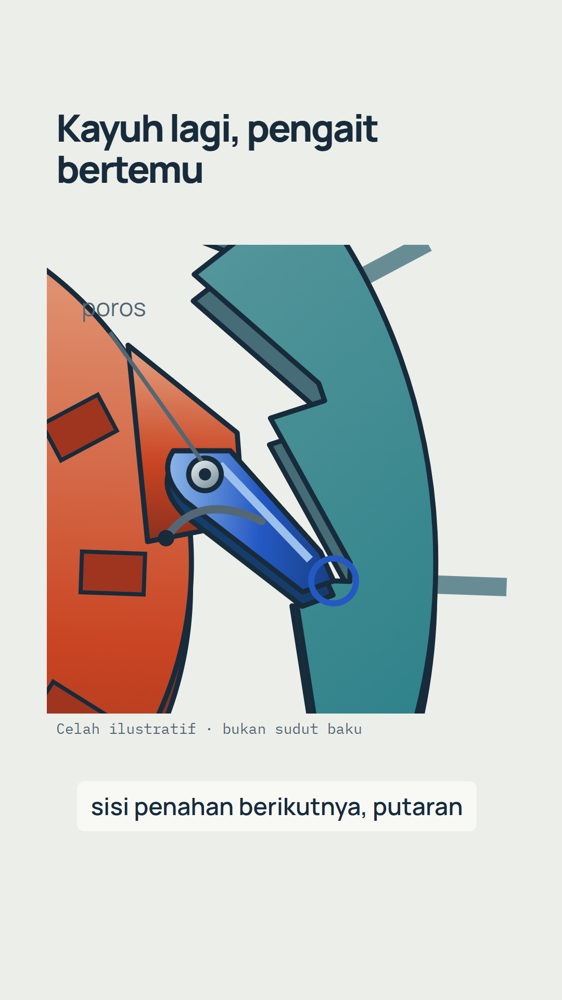
Saat mengayuh lagi, penggerak menyusul. Setelah ujung pengait bertemu sisi penahan berikutnya, putaran tersambung kembali.
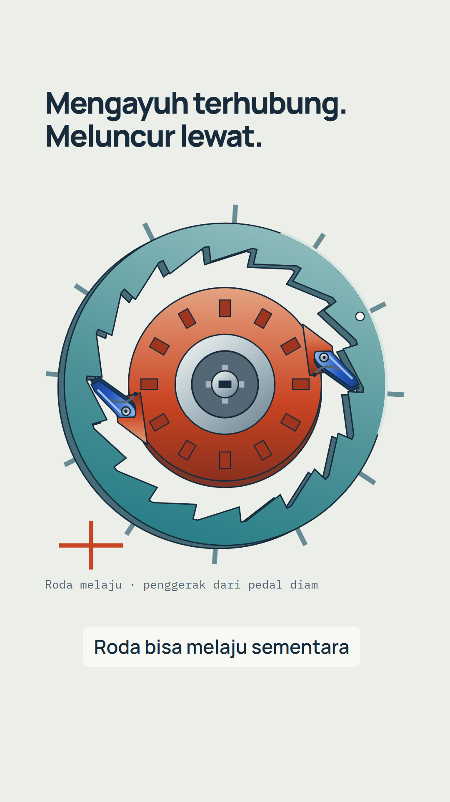
Jadi, saat meluncur, gigi melewati pengait. Saat mengayuh, pengait menahannya. Roda bisa melaju sementara pedal beristirahat.